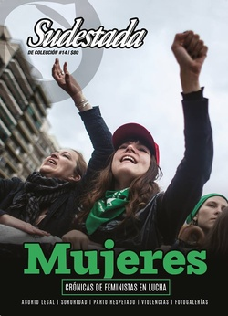

Buscar
Glosario feminista
Definiciones, opiniones y comentarios de mujeres de todo el mundo y de todos los tiempos. A veces polémicas, otras tantas incendiarias, cada una dispara el debate rebelde. Lejos, muy lejos, de los lugares comunes impuestos por el patriarcado, hay otro universo de ideas que debemos asimilar. Como herramientas para un combate que sigue y no se detiene ante nada. Como voces que se van sumando, desde abajo, para cambiarlo todo con la música de las multitudes.
Edición Especial N° 14
Mujeres. Crónicas de feministas en lucha
Sudestada de Colección
Comprar edición impresaSumario
- Algo cruje
- Glosario feminista
- Ya no nos callamos más
- Cambiar la historia sin pedir permiso
- Contala como quieras
- Dibujadas, comprometidas y divertidas
- "Lo más interesante es pensar que se pueden crear otros mundos"
- La memoria a través de la cámara
- América Latina. Una mujer en pie de lucha
- Aborto legal. Santificado sea tu útero
- Harás un parto sin violencia
Compartir Articulo
A
Aborto: "La consigna 'Anticonceptivos para no abortar, aborto legal para no morir' la escuché por primera vez en boca de la abogada italiana, Erica; participante en las primeras reuniones de la Comisión por el Derecho al Aborto, ella había manifestado que provenía de las feministas de su país. Creo que la consigna original era 'Aborto legal para no morir, anticonceptivos para no abortar' y nosotras la invertimos, lo que tenía un sentido más lógico. Lo cierto es que se difundió como reguero de pólvora desde el primer momento, marcando el comienzo de una gran etapa de luchas".
Dora Coledesky, fundadora de la Comisión por el Derecho al Aborto en Argentina.
Alas: "Le cortan sus alas y luego la culpan por no saber cómo volar".
Simone de Beauvoir, escritora francesa.
Andamos: "Andamos/ cambiándonos nosotras/ para cambiar el mundo".
Gisela López, poeta guatemalteca.
Anónimo: "Yo me aventuraría a pensar el que Anon (anónimo), quien escribiera tantos poemas sin firmarlos, fue a menudo una mujer".
Virginia Woolf, escritora británica.
Apatía: "Recuerden las mujeres que dispersas las fuerzas se debilitan y que para conseguir el bien común necesario es sacudir la apatía y elevarse por encima del bienestar del momento presente".
Alicia Moreau de Justo, activista feminista argentina.
Aprender: "¿Por qué aprendemos a temer el terrorismo pero no el racismo, no el sexismo/machismo, no la homofobia?".
Angela Davis, activista afroamericana y feminista.
Árbol: "Todas las mujeres conciben ideas, pero no todas conciben hijos. El ser humano no es un árbol frutal que sólo se cultive por la cosecha".
Emilia Pardo Bazán, aristócrata novelista, periodista y ensayista del siglo xix.
Autonomía: "Al crecer en dependencia, por ese proceso de orfandad que se construye en las mujeres, se nos crea una necesidad irremediable de apego a los otros. El trato social en la vida cotidiana de las mujeres está construido para impedir la soledad. El trato que ideológicamente se da a la soledad y la construcción de género anulan la experiencia positiva de la soledad como parte de la experiencia humana de las mujeres. Convertirnos en sujetas significa asumir que de veras estamos solas: solas en la vida, solas en la existencia. Y asumir esto significa dejar de exigir a los demás que sean nuestros acompañantes en la existencia; dejar de conminar a los demás para que estén y vivan con nosotras. Una demanda típicamente femenina es que nos 'acompañen' pero es un pedido de acompañamiento de alguien que es débil, infantil, carenciada, incapaz de asumir su soledad. En la construcción de la autonomía se trata de reconocer que estamos solas y de construir la separación y distancia entre el yo y los otros".
Marcela Lagarde, investigadora mexicana.
B
Bailar: "Si no puedo bailar, tu revolución no me interesa".
Emma Goldman, escritora lituana y referente del feminismo.
Banquete: "Y bien: hastiadas ya de tanto y tanto llanto y miseria, hastiadas del eterno y desconsolador cuadro que nos ofrecen nuestros desgraciados hijos, los tiernos pedazos de nuestro corazón, hastiadas de pedir y suplicar, de ser el juguete, el objeto de los placeres de nuestros infames explotadores o de viles esposos, hemos decidido levantar nuestra voz en el concierto social y exigir, exigir decimos, nuestra parte de placeres en el banquete de la vida".
Fragmento de un editorial del periódico anarco-feminista La voz de la Mujer (1896).
Batallas: "El feminismo no ha peleado ninguna guerra. No ha asesinado a sus oponentes. No ha creado campos de concentración, matado de hambre a sus enemigos, ni practicado crueldades. Sus batallas han sido por la educación, por el derecho al voto, por mejores condiciones laborales, por seguridad en las calles, por el cuidado de las niñas, por el bienestar social, por centros de crisis de violación, refugios de mujeres y reformas legales".
Dale Spender, escritora australiana.
Bronca: "Las feministas no tenemos odio, tenemos bronca. El odio —con los fierros, sean armas o moneda— es cosa de hombres. Estamos hartas de odio, aunque venga empaquetado en sublimaciones y piropos. No hemos declarado la guerra, sino que señalamos que existe y tiene los años de nuestra civilización. Nos defendimos como pudimos, a veces con malas artes, por lo tanto es mejor que ahora parezca una guerra abierta, limpia, esta que declaramos contra todas las formas de la arrogancia machista. La guerrilla de la artimaña, el repliegue y la comodidad no hace sino reproducir series de esposas 'achanchadas' y madres castradoras. El Movimiento de Liberación Femenina es una ideología revolucionaria, no exprimida de libracos apolillados sino del cotidiano martirio de la mitad de la humanidad. Nace en las ferias y junto a las bateas, a la vera de las camillas de ginecólogos carniceros y a contrapelo de los viejitos célibes del Vaticano que vienen diagramando la conducta sexual según conviene a los intereses de los capitales y a las fluctuaciones del mercado bélico".
María Elena Walsh, escritora argentina.
Bruja: "Si eres una mujer y te atreves a ser tú misma, eres una Bruja. Tú, creas tus propias reglas. Tú eres libre y bella. Puedes ser invisible o evidente según como elijas mostrar tu bruja interna. Puedes formar tu propia asamblea de hermanas brujas (trece es un acogedor número para un grupo) y hacer tus propias acciones… Eres una Bruja diciendo en voz alta 'Yo soy una Bruja' tres veces, y pensando acerca de ello. Eres una Bruja siendo mujer, salvaje, colérica, jubilosa, e inmortal".
Manifiesto de la organización Witch (Women's International Terrorist Conspiracy from Hell).
C
Calor: "Soy mujer. Y un entrañable calor me abriga cuando el mundo me golpea. Es el calor de las otras mujeres, de aquellas que hicieron de la vida este rincón sensible, luchador, de piel suave y tierno corazón guerrero".
Alejandra Pizarnik, poeta argentina.
Construcción: "Lo que conocemos como femenino en el patriarcado no sería lo que las mujeres son o han sido, sino lo que los hombres han construido para ellas".
Luce Irigaray, filósofa francesa.
Cuerpo: "Basta que nos preguntemos si tenemos alguna esperanza de lograr imponer a los hombres el deber de proteger la fecundidad y la salud de las mujeres, y evitar la infinidad de millones de abortos que tienen lugar a diario, para constatar con cegadora claridad cuán poco libres son las mujeres… El cuerpo de una mujer es el campo de batalla en el que lucha por su liberación. La opresión actúa a través de su cuerpo cosificándola, sexualizándola, victimizándola e incapacitándola".
Germaine Greer, activista australiana...
(La nota completa en la edición gráfica de Sudestada... ¿Por qué publicamos apenas un fragmento de cada artículo? Porque la subsistencia de Sudestada depende en un 100 por ciento de la venta y de la confianza con sus lectores, no recibimos subsidios ni pauta alguna, de modo que la venta directa garantiza que nuestra publicación siga en las calles. Gracias por comprender)
Comentarios

Sudestada
El colectivo de Revista Sudestada esta integrado por Ignacio Portela, Hugo Montero, Walter Marini, Leandro Albani, Martín Latorraca, Pablo Fernández y Repo Bandini.
Articulos más vistos


LIBRERÍA SUDESTADA

Colección infantil

Distribuidora de Libros

Suscripción

Sudestada en URUGUAY

Otros articulos de esta edición
América Latina. Una mujer en pie de lucha
Un presente complejo es el que le toca transitar a la mujer indígena, rural, campesina y afrodescendiente en nuestra América ...
"Lo más interesante es pensar que se pueden crear otros mundos"
Desde un tiempo a esta parte, la voz narrativa de Gabriela Cabezón Cámara irrumpió en el mapa criollo por la ...
Ya no nos callamos más
En los últimos meses, se multiplicaron las denuncias por abusos al interior de diversas organizaciones políticas y sociales de izquierda. ...
Aborto legal. Santificado sea tu útero
Más allá de las presiones de la Iglesia Católica y de la demagogia del aparato político en general, la demora ...
Algo cruje
De noche, cuando todo se apaga y las calles son un páramo de quietud, hay un ruido. Tenue, mínimo, casi ...
Dibujadas, comprometidas y divertidas
El humor gráfico, como la historieta, parecía un terreno vedado para nosotras durante décadas. Como si todo el escenario nos ...